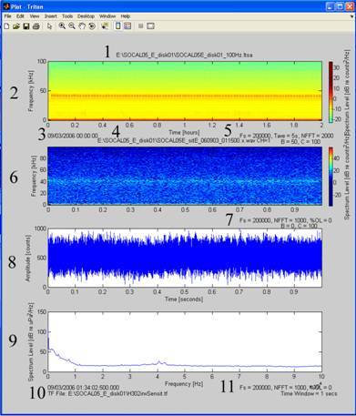
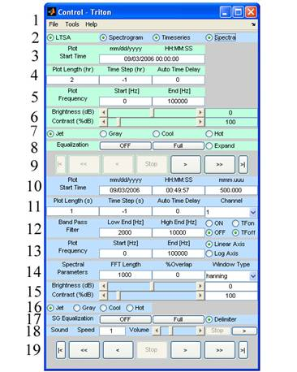
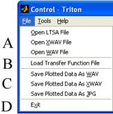
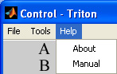
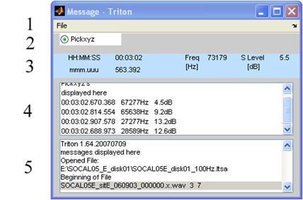
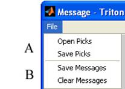
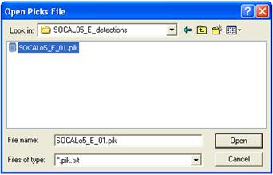

Triton Windows
Plot Window
The Triton Plot Window is a standard MATLAB figure window, allowing it to be modified, saved in various formats, and printed. All pull-downs and tools are the same as typical MATLAB figure windows except the zoom in/out tools which will modify the Plot Start Time after zooming in and deselecting the tool.

Components of the Plot Window:
1) LTSA file name
2) LTSA plot
3) LTSA Plot Start Time
4) XWAV/WAV file name
5) Parameters used to generate and plot LTSA
6) Spectrogram plot
7) Parameters used to generate and plot spectrogram
8) Time series plot
9) Spectra plot
10) XWAV/WAV Plot Start Time
11) Parameters used to generate and plot spectra
Control Window
The Control Window allows users to open, convert, and plot data files in addition to controlling various plotting parameters. The Control Window has three main sections: pull-down menus, light green LTSA plot control, and the Light Blue XWAV/WAV plot control.

LTSA Plot Control – Light Green
1) File, Tools, and Help pull-down menus – see next section.
2) Toggle on/off the different plot types: LTSA, Spectrogram, Timeseries, and Spectra. Note the Control Window color scheme: LTSA plot control is light green, and the XWAV/WAV plot controls are light blue.
3) Plot Start Time – Display and change LTSA plot start time.
4) Plot Length
(hr) – LTSA plot display length
Time Step (hr) – LTSA plot step size between the start of plot
frames. Set to -1 for steps equal to one Plot Length frame of data.
Set to -2 for steps in real time equal to Plot Length.
Auto Time Delay – Time delay in seconds between plot frames during auto
forward and auto rewind (see below)
5) Plot Frequency – LTSA plot start and end frequencies
6) Brightness and Contrast adjustments for LTSA plot. Adjustments can be made with the sliders, arrows, or by entering values.
7) Select LTSA plot color map
8) Equalization – Toggle on/off removal of average LTSA levels. Toggle between full plot frame average or shorter user picked window to be subtracted from LTSA leads. Expand – Activates cross hairs to pick an event in the LTSA plot and open the data originating XWAV/WAV file at the corresponding time (see LTSA selection).
9) LTSA plot frame step
buttons:
Go to
start
Go to end
Rewind one
step
Forward one step
Auto
rewind
Auto
forward
 Stop auto forward/rewind
Stop auto forward/rewind
XWAV/WAV Plot Control – Light Blue
10) Plot Start Time - Display and change XWAV/WAV plot start time.
11) Plot Length (s)
– XWAV/WAV plot display length
Time Step (s) – XWAV/WAV plot step size between the start of plot
frames. Set to -1 for steps equal to one Plot Length frame of data.
Auto Time Delay – Time delay in seconds between plot frames during auto
forward and auto rewind (see below)
Channel – Select which WAV file channel to display
12) Band Pass Filter – Low and High corner frequencies for band passing the display XWAV/WAV data. Toggle On/Off transfer function correction for Spectra plot only (See transfer function section). Need to load transfer function from Control Window ‘File’ pull-down menu (see next section).
13) Plot Frequency – XWAV/WAV plot start and end frequencies.
14) FFT length – Length of Fast Fourier Transform (FFT) window in samples
%Overlap – Percent of Window overlap
Window Type – Hanning is currently the only available window type.
15) Brightness and Contrast adjustments for LTSA plot. Adjustments can be made with the sliders, arrows, or by entering values.
16) Select WAV/XWAV plot color map
17) SG Equalization
– Toggle On/Off removal of average XWAV/WAV levels. Toggle between full
plot frame average or shorter user picked window to be subtracted from XWAV/WAV
leads
Delimiter – Toggle on/off a vertical line depicting the break between
sequential HARP raw files in XWAV data.
18) Sound – Speed of sound playback 0.1 to 10 times normal. Volume of sound play back play sound through computer sound system. Stop sound play back.
19) LTSA plot frame step
buttons:
 Go to
start
Go to end
Go to
start
Go to end
Rewind one step
Forward one step
Auto
rewind
Auto
forward
 Stop auto forward/rewind
Stop auto forward/rewind
Control Window Pull-Down Menus
File Pull-Down Menu

A) Open LTSA, XWAV or WAV files.
B) Load Transfer Function files - See Transfer Function Files section
C) Save – Plotted data as WAV, XWAV or JPG files
D) Exit- Exit Triton
Help Pull-Down Menu

A) Select About to display Triton help pop up window which provides your current Triton version number, the ftp site for past and current versions of Triton, and an email address to report bugs or request support/enhancements.
B) Select Manual to open this Triton user manual with adobe acrobat (www.adobe.com)
Message Window

1) File pull-down menu – see next section.
2) Toggle on/off the Pickxyz tool in the Plot Window. When cursor cross-hairs are activated with toggle on, left button mouse clicks in Plot Window are shown in Pickxyz display.
3) Displays the current information about the location of the cursor in the Plot Window. Activated by left button mouse click in Plot Window. Background color is based on what plot the cursor is in: light green for LTSA’s, and light blue for spectrograms, spectra and time series.
4) Pickxyz Display - Pickxyz data is displayed in a scrollable display. Information can be deleted or added to this window including user defined notes. The information in this window can be saved to output files (*.pik) and previous saved *.pik files can be uploaded to the window for additional Pickxyz’s and modifications.
5) Message Display- Information based on various operations including error and warning messages are shown to the user in scrollable display. Information in this display is not editable, but can be saved (*.msg) and used for session logging or software bug reporting.
Message Window Pull-Down Menus
A. Open - Open previously saved Pickxyz files (*.pik)
Save - Save current Pickxyz display data to a *.pik ascii text file
B. Save - Saves
current Message display to a *.msg ascii text file
Clear - Clears the current Message display of all information

